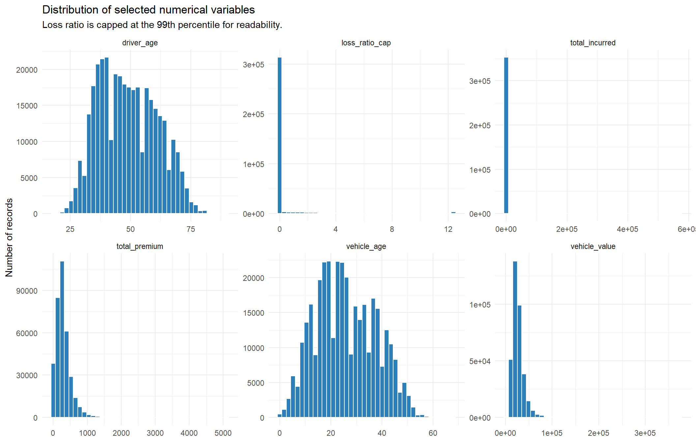
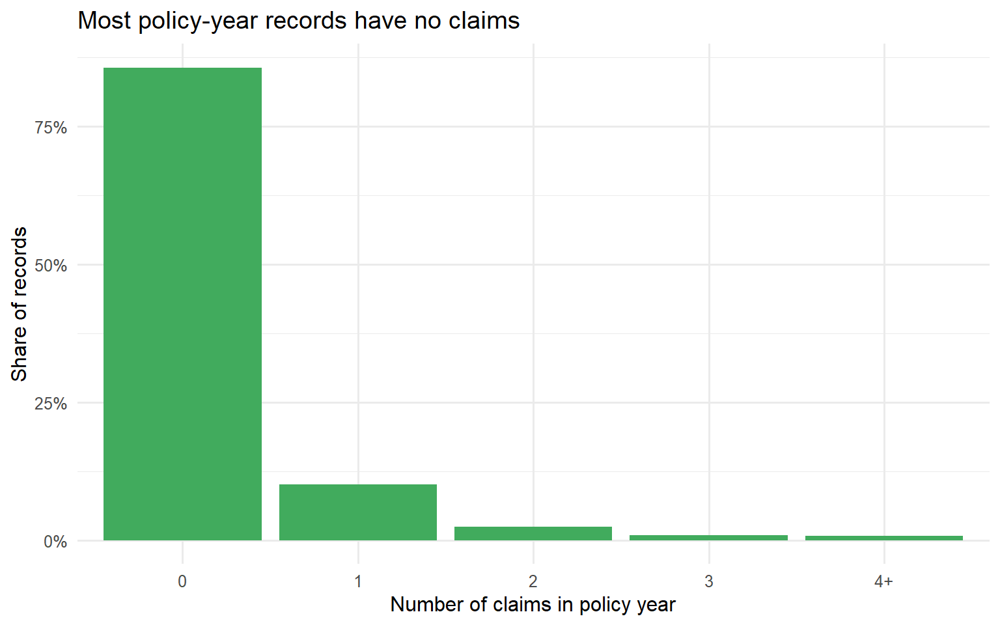
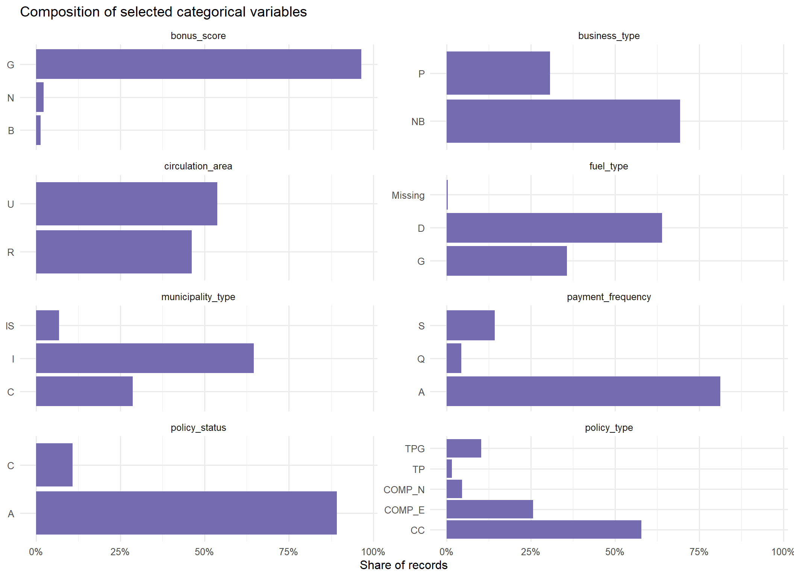
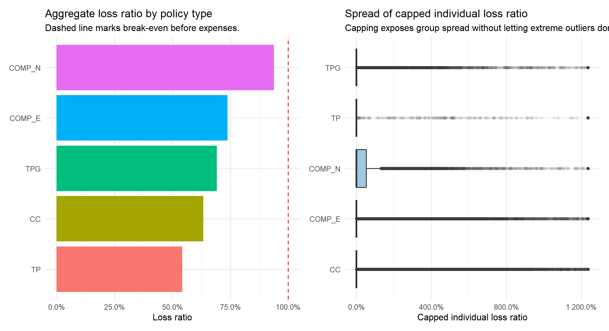
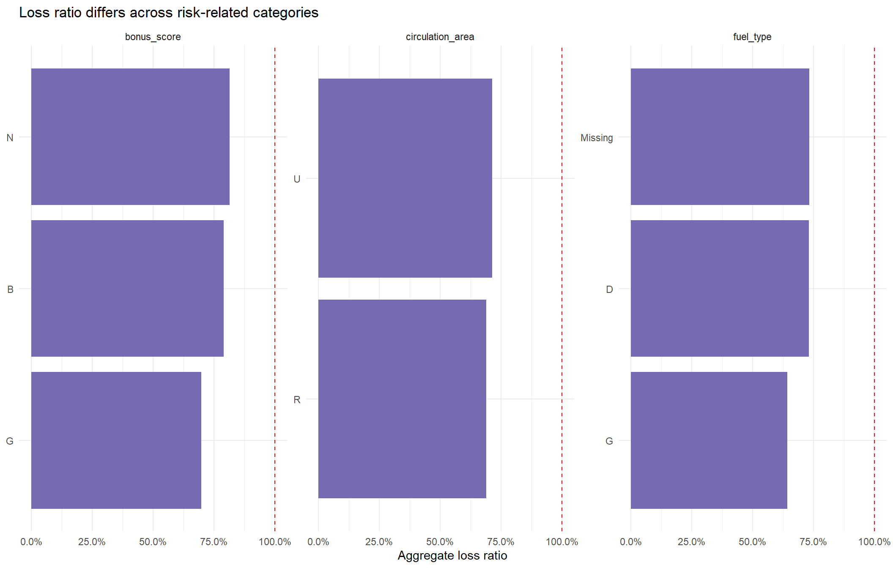
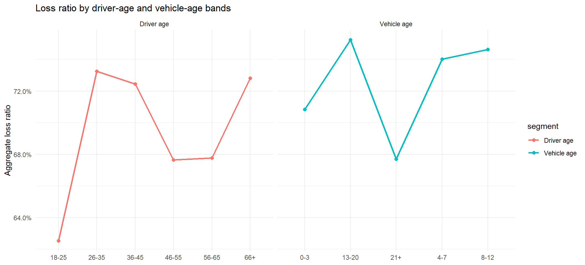
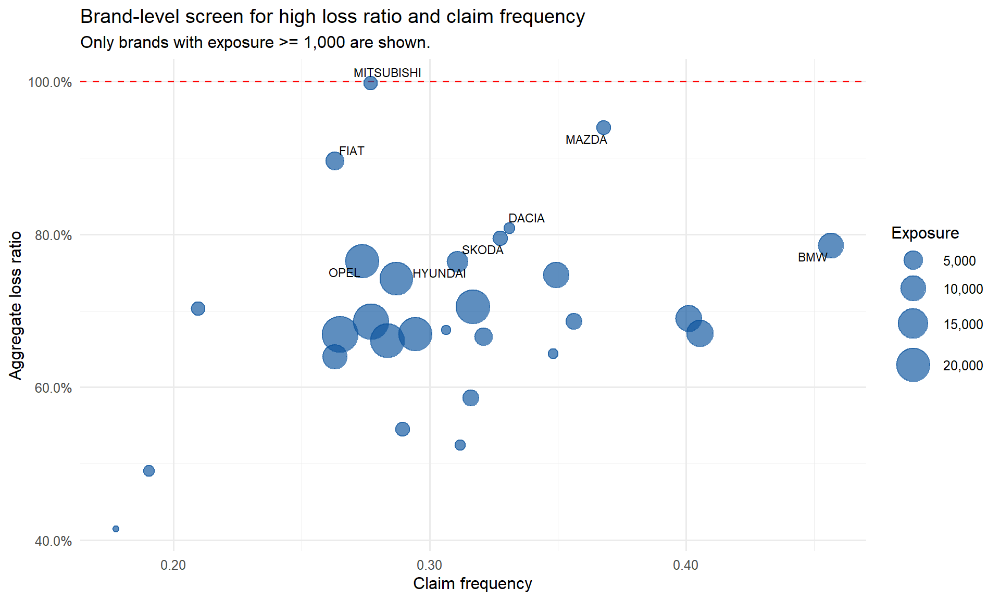

library(tidyverse)
library(readxl)
library(scales)
library(patchwork)
library(knitr)
library(ggrepel)
if (file.exists("TH_Ex/th_ex1_common.R")) {
source("TH_Ex/th_ex1_common.R")
} else {
source("th_ex1_common.R")
}
theme_set(theme_minimal(base_size = 12))Take-home Exercise 1: Visual Analytics for Data Discovery
1 Overview
This report applies visual analytics to a real-world motor insurance portfolio from a Spanish non-life insurer. The exercise brief asks for R-based visual analytics that go beyond dashboard reporting and help discover factors linked to portfolio profitability and volatility.
The report is organised in the same reproducible style as the senior reference reports: context first, analytical sandbox, data preparation, univariate exploration, bivariate analysis, statistical validation, and final findings. The analysis itself is rebuilt for the 2026 motor insurance brief and uses the Mendeley motor portfolio data.
Two analytical definitions are used throughout the report:
- Profitability is measured by aggregate
profit = total_premium - total_incurredand by aggregateloss_ratio = total_incurred / total_premium. Lower loss ratio indicates better underwriting profitability before expenses. - Volatility is measured by claim occurrence, claim frequency, capped individual loss ratio, high-loss policy rate, and upper-tail loss-ratio behaviour.
The main question is: which portfolio segments show weaker profitability or higher volatility, and are those patterns visually and statistically defensible?
2 Analytical sandbox
2.1 R packages and helper functions
The analytical sandbox uses tidyverse for data wrangling, ggplot2 and extensions for visual analytics, and knitr for tabular reporting. Reusable import and portfolio-summary functions are stored in TH_Ex/th_ex1_common.R so that the report and slides can use the same definitions.
2.2 Data source and import
The dataset is the open-access motor insurance portfolio from Mendeley Data. The helper function downloads and extracts the data if the CSV and data dictionary are not already available locally. The CSV is semicolon-delimited.
motor <- load_th1_motor()
dict <- read_excel(th1_dict_path)
glimpse(motor)Rows: 354,140
Columns: 55
$ insured_id <dbl> 1, 2, 2, 2, 3, 3, 3, 4, 4, 4, 5, 5, 5, 6, …
$ year <fct> 2022, 2022, 2023, 2024, 2022, 2023, 2024, …
$ policy_type <chr> "COMP_E", "COMP_E", "COMP_E", "COMP_E", "C…
$ policy_status <chr> "C", "A", "A", "A", "A", "A", "A", "A", "A…
$ business_type <chr> "NB", "P", "P", "P", "NB", "P", "P", "NB",…
$ payment_frequency <chr> "A", "A", "A", "A", "S", "S", "S", "A", "A…
$ bonus_score <chr> "G", "G", "G", "G", "G", "G", "G", "G", "G…
$ driver_age <dbl> 48, 43, 44, 45, 45, 46, 47, 32, 33, 34, 39…
$ vehicle_age <dbl> 22, 24, 25, 26, 26, 27, 28, 12, 13, 14, 20…
$ age_driving_licence <dbl> 26, 19, 19, 18, 19, 19, 19, 19, 19, 19, 19…
$ fuel_type <chr> "G", "D", "D", "D", "D", "D", "D", "D", "D…
$ vehicle_value <dbl> 149511.44, 65065.12, 65065.12, 65065.12, 5…
$ seats <dbl> 4, 8, 8, 8, 7, 7, 7, 5, 5, 5, 5, 5, 5, 5, …
$ power_to_weight_ratio <dbl> 3.92, 10.15, 10.15, 10.15, 9.19, 9.19, 9.1…
$ vehicle_brand <chr> "PORSCHE", "MERCEDES", "MERCEDES", "MERCED…
$ municipality_type <chr> "I", "I", "I", "I", "I", "I", "I", "I", "I…
$ circulation_area <chr> "U", "U", "U", "U", "R", "R", "R", "R", "R…
$ total_premium <dbl> 279.5576, 546.6234, 548.7526, 584.6324, 68…
$ liability_premium <dbl> 30.60232, 114.33336, 110.66689, 122.09253,…
$ property_damage_premium <dbl> 121.9127, 303.1060, 304.9560, 305.2251, 35…
$ theft_premium <dbl> 112.361489, 80.784824, 83.521384, 107.8868…
$ fire_premium <dbl> 3.832441, 7.826861, 6.151465, 5.842892, 7.…
$ glass_premium <dbl> 8.305788, 30.091751, 32.861626, 31.101584,…
$ legal_protection_premium <dbl> 2.043622, 7.812747, 7.655637, 10.084173, 6…
$ occupants_premium <dbl> 0.4992053, 2.6679084, 2.9395659, 2.3992827…
$ total_claims <dbl> 0, 0, 1, 2, 0, 0, 0, 0, 0, 0, 0, 0, 0, 5, …
$ liability_claims <dbl> 0, 0, 1, 1, 0, 0, 0, 0, 0, 0, 0, 0, 0, 0, …
$ liability_property_claims <dbl> 0, 0, 1, 1, 0, 0, 0, 0, 0, 0, 0, 0, 0, 0, …
$ liability_injury_claims <dbl> 0, 0, 0, 0, 0, 0, 0, 0, 0, 0, 0, 0, 0, 0, …
$ property_claims <dbl> 0, 0, 0, 1, 0, 0, 0, 0, 0, 0, 0, 0, 0, 5, …
$ theft_claims <dbl> 0, 0, 0, 0, 0, 0, 0, 0, 0, 0, 0, 0, 0, 0, …
$ fire_claims <dbl> 0, 0, 0, 0, 0, 0, 0, 0, 0, 0, 0, 0, 0, 0, …
$ glass_claims <dbl> 0, 0, 0, 0, 0, 0, 0, 0, 0, 0, 0, 0, 0, 0, …
$ legal_protection_claims <dbl> 0, 0, 0, 0, 0, 0, 0, 0, 0, 0, 0, 0, 0, 0, …
$ occupants_claims <dbl> 0, 0, 0, 0, 0, 0, 0, 0, 0, 0, 0, 0, 0, 0, …
$ total_incurred <dbl> 0.000, 0.000, 233.013, 2586.361, 0.000, 0.…
$ liability_incurred <dbl> 0.000, 0.000, 233.013, 1035.000, 0.000, 0.…
$ liability_property_incurred <dbl> 0.000, 0.000, 233.013, 1035.000, 0.000, 0.…
$ liability_injury_incurred <dbl> 0.000, 0.000, 0.000, 0.000, 0.000, 0.000, …
$ property_incurred <dbl> 0.000, 0.000, 0.000, 1551.361, 0.000, 0.00…
$ theft_incurred <dbl> 0, 0, 0, 0, 0, 0, 0, 0, 0, 0, 0, 0, 0, 0, …
$ fire_incurred <dbl> 0, 0, 0, 0, 0, 0, 0, 0, 0, 0, 0, 0, 0, 0, …
$ glass_incurred <dbl> 0, 0, 0, 0, 0, 0, 0, 0, 0, 0, 0, 0, 0, 0, …
$ legal_protection_incurred <dbl> 0, 0, 0, 0, 0, 0, 0, 0, 0, 0, 0, 0, 0, 0, …
$ occupants_incurred <dbl> 0, 0, 0, 0, 0, 0, 0, 0, 0, 0, 0, 0, 0, 0, …
$ total_exposure <dbl> 0.09863014, 1.00000000, 1.00000000, 1.0000…
$ liability_exposure <dbl> 0.09863014, 1.00000000, 1.00000000, 1.0000…
$ claim_flag <lgl> FALSE, FALSE, TRUE, TRUE, FALSE, FALSE, FA…
$ profit <dbl> 279.5576, 546.6234, 315.7396, -2001.7291, …
$ loss_ratio <dbl> 0.0000000, 0.0000000, 0.4246231, 4.4239104…
$ loss_ratio_cap <dbl> 0.0000000, 0.0000000, 0.4246231, 4.4239104…
$ claim_frequency <dbl> 0, 0, 1, 2, 0, 0, 0, 0, 0, 0, 0, 0, 0, 5, …
$ severity <dbl> NA, NA, 233.0130, 1293.1807, NA, NA, NA, N…
$ driver_age_band <fct> 46-55, 36-45, 36-45, 36-45, 36-45, 46-55, …
$ vehicle_age_band <fct> 21+, 21+, 21+, 21+, 21+, 21+, 21+, 8-12, 1…2.3 Portfolio size and derived variables
The imported portfolio contains policy-year records from 2022 to 2024. Several analytical variables are derived before plotting:
profit: premium minus incurred loss.loss_ratio: incurred loss divided by premium.loss_ratio_cap: individual loss ratio capped at the 99th percentile so that plots remain readable.claim_flag: whether the policy-year has at least one claim.claim_frequency: claim count divided by exposure.severity: incurred loss per claim, defined only for claim records.driver_age_bandandvehicle_age_band: age bands for segment-level comparison.
portfolio_size <- tibble(
measure = c(
"Policy-year records",
"Distinct insured IDs",
"Calendar years",
"Variables after derivation",
"Aggregate premium",
"Aggregate incurred loss",
"Aggregate profit",
"Aggregate loss ratio",
"Claim-record share"
),
value = c(
comma(nrow(motor)),
comma(n_distinct(motor$insured_id)),
paste(levels(motor$year), collapse = ", "),
comma(ncol(motor)),
money(sum(motor$total_premium, na.rm = TRUE)),
money(sum(motor$total_incurred, na.rm = TRUE)),
money(sum(motor$profit, na.rm = TRUE)),
pct(sum(motor$total_incurred, na.rm = TRUE) / sum(motor$total_premium, na.rm = TRUE)),
pct(mean(motor$claim_flag, na.rm = TRUE))
)
)
kable(portfolio_size)| measure | value |
|---|---|
| Policy-year records | 354,140 |
| Distinct insured IDs | 185,678 |
| Calendar years | 2022, 2023, 2024 |
| Variables after derivation | 55 |
| Aggregate premium | €105,079,669 |
| Aggregate incurred loss | €73,864,811 |
| Aggregate profit | €31,214,859 |
| Aggregate loss ratio | 70.3% |
| Claim-record share | 14.3% |
- Portfolio is profitable in aggregate before expenses.
- Aggregate totals can hide segment-level volatility.
- The remaining analysis focuses on distributions, outliers, and segment comparisons.
2.4 Data quality checks
missing_tbl <- motor |>
summarise(across(everything(), ~sum(is.na(.x)))) |>
pivot_longer(everything(), names_to = "variable", values_to = "missing_records") |>
filter(missing_records > 0) |>
mutate(missing_share = missing_records / nrow(motor)) |>
arrange(desc(missing_records))
kable(missing_tbl, digits = 4)| variable | missing_records | missing_share |
|---|---|---|
| severity | 303333 | 0.8565 |
| fuel_type | 1287 | 0.0036 |
| vehicle_value | 513 | 0.0014 |
| loss_ratio | 49 | 0.0001 |
| loss_ratio_cap | 49 | 0.0001 |
| claim_frequency | 49 | 0.0001 |
| vehicle_age | 2 | 0.0000 |
| age_driving_licence | 2 | 0.0000 |
| vehicle_age_band | 2 | 0.0000 |
- Core premium and incurred-loss variables are mostly complete.
severityhas many missing values because it is defined only for claim records.- Missing
fuel_type,vehicle_value,vehicle_age, andage_driving_licencerecords are retained to avoid distorting exposure totals.
3 Task 1: Univariate visual analytics
Univariate analysis is used to understand the scale, skewness, zero inflation, and category concentration of the portfolio before comparing segments.
3.1 Numerical variables
num_profile <- motor |>
summarise(across(
c(driver_age, vehicle_age, age_driving_licence, vehicle_value,
power_to_weight_ratio, total_premium, total_claims,
total_incurred, total_exposure, profit, loss_ratio),
list(
min = ~min(.x, na.rm = TRUE),
q25 = ~quantile(.x, 0.25, na.rm = TRUE),
median = ~median(.x, na.rm = TRUE),
mean = ~mean(.x, na.rm = TRUE),
q75 = ~quantile(.x, 0.75, na.rm = TRUE),
p95 = ~quantile(.x, 0.95, na.rm = TRUE),
max = ~max(.x, na.rm = TRUE)
),
.names = "{.col}_{.fn}"
)) |>
pivot_longer(
everything(),
names_to = c("variable", ".value"),
names_pattern = "(.+)_(min|q25|median|mean|q75|p95|max)"
)
kable(num_profile, digits = 2)| variable | min | q25 | median | mean | q75 | p95 | max |
|---|---|---|---|---|---|---|---|
| driver_age | 18.00 | 39.00 | 48.00 | 49.01 | 58.00 | 69.00 | 90.00 |
| vehicle_age | 0.00 | 17.00 | 25.00 | 25.92 | 35.00 | 46.00 | 68.00 |
| age_driving_licence | 0.00 | 19.00 | 20.00 | 22.99 | 25.00 | 37.00 | 80.00 |
| vehicle_value | 1630.12 | 18607.58 | 24729.60 | 26977.44 | 32252.32 | 49361.42 | 374034.21 |
| power_to_weight_ratio | 0.00 | 10.74 | 12.05 | 12.33 | 13.73 | 16.72 | 64.81 |
| total_premium | 0.00 | 146.14 | 257.90 | 296.72 | 384.98 | 704.53 | 5107.64 |
| total_claims | 0.00 | 0.00 | 0.00 | 0.22 | 0.00 | 1.00 | 18.00 |
| total_incurred | 0.00 | 0.00 | 0.00 | 208.58 | 0.00 | 1055.30 | 571128.32 |
| total_exposure | 0.00 | 0.44 | 0.84 | 0.71 | 1.00 | 1.00 | 1.00 |
| profit | -571077.99 | 94.92 | 229.90 | 88.14 | 346.67 | 638.05 | 5107.64 |
| loss_ratio | 0.00 | 0.00 | 0.00 | 0.79 | 0.00 | 2.90 | 11348.86 |
- Numerical profiles show large gaps between medians, means, upper percentiles, and maximum values.
- This confirms that distributional plots are needed before comparing portfolio segments.
motor |>
select(driver_age, vehicle_age, vehicle_value,
total_premium, total_incurred, loss_ratio_cap) |>
pivot_longer(everything(), names_to = "variable", values_to = "value") |>
ggplot(aes(x = value)) +
geom_histogram(bins = 40, colour = "white", fill = "#2c7fb8") +
facet_wrap(~ variable, scales = "free", ncol = 3) +
labs(
title = "Distributions of selected numerical variables",
subtitle = "Individual loss ratio is capped at the 99th percentile for visual readability.",
x = NULL,
y = "Number of policy-year records"
)
- Numerical variables are strongly right-skewed.
- Incurred loss and individual loss ratio are zero-inflated because most records have no claim.
- Medians, percentiles, and capped distributions are more reliable than means alone.
3.2 Claim count distribution
motor |>
mutate(claim_count_band = case_when(
total_claims >= 4 ~ "4+",
TRUE ~ as.character(total_claims)
)) |>
count(claim_count_band) |>
mutate(
claim_count_band = factor(claim_count_band, levels = c("0", "1", "2", "3", "4+")),
share = n / sum(n)
) |>
ggplot(aes(x = claim_count_band, y = share)) +
geom_col(fill = "#41ab5d") +
scale_y_continuous(labels = percent) +
labs(
title = "Most policy-year records have no claims",
x = "Number of claims in policy year",
y = "Share of records"
)
- Most policy-year records have zero claims.
- Portfolio volatility comes from a small minority of claim records.
- The upper tail can materially affect aggregate profitability.
3.3 Categorical variables
cat_vars <- c(
"policy_type", "policy_status", "business_type", "payment_frequency",
"bonus_score", "fuel_type", "municipality_type", "circulation_area"
)
motor |>
select(all_of(cat_vars)) |>
pivot_longer(everything(), names_to = "variable", values_to = "category") |>
mutate(category = fct_na_value_to_level(as.factor(category), level = "Missing")) |>
count(variable, category) |>
group_by(variable) |>
mutate(
share = n / sum(n),
category = fct_reorder(category, share)
) |>
ungroup() |>
ggplot(aes(x = category, y = share)) +
geom_col(fill = "#756bb1") +
coord_flip() +
scale_y_continuous(labels = percent) +
facet_wrap(~ variable, scales = "free_y", ncol = 2) +
labs(
title = "Composition of selected categorical variables",
x = NULL,
y = "Share of records"
)
- Portfolio records are concentrated in selected categories.
- Policy type, payment frequency, and bonus score dominate much of the exposure.
- Small high-loss-ratio segments should be interpreted together with exposure size and claim count.
4 Task 2: Bivariate visual analytics and validation
Bivariate analysis compares profitability and volatility across time and major risk-related segments. The main profitability visual is aggregate loss ratio; the main volatility visuals are claim frequency, high-loss rate, and spread of capped individual loss ratios.
4.1 Temporal trend: profitability worsens in 2024
yearly <- portfolio_summary(motor, year)
kable(yearly, digits = 3)| year | records | exposure | premium | incurred | claims | profit | high_loss_rate | p95_loss_ratio | loss_ratio | claim_frequency | avg_premium | avg_severity |
|---|---|---|---|---|---|---|---|---|---|---|---|---|
| 2022 | 67172 | 41912.50 | 18697928 | 12270105 | 12665 | 6427823 | 0.080 | 2.419 | 0.656 | 0.302 | 446.118 | 968.820 |
| 2023 | 118835 | 82399.04 | 35344308 | 23488354 | 25158 | 11855954 | 0.087 | 2.744 | 0.665 | 0.305 | 428.941 | 933.634 |
| 2024 | 168133 | 126014.36 | 51037433 | 38106351 | 39276 | 12931082 | 0.097 | 3.205 | 0.747 | 0.312 | 405.013 | 970.220 |
- The year-level table summarises exposure, premium, incurred loss, profit, and loss ratio.
- It provides the numeric baseline for the temporal trend plot.
trend_amount <- yearly |>
select(year, Premium = premium, Incurred = incurred, Profit = profit) |>
pivot_longer(-year, names_to = "measure", values_to = "amount") |>
ggplot(aes(x = year, y = amount, colour = measure, group = measure)) +
geom_line(linewidth = 1) +
geom_point(size = 2) +
scale_y_continuous(labels = money) +
labs(
title = "Premium, incurred loss, and profit by year",
x = NULL,
y = "Aggregate amount"
)
trend_lr <- yearly |>
ggplot(aes(x = year, y = loss_ratio, group = 1)) +
geom_line(linewidth = 1, colour = "#d95f0e") +
geom_point(size = 3, colour = "#d95f0e") +
scale_y_continuous(labels = pct) +
labs(
title = "Aggregate loss ratio by year",
x = NULL,
y = "Loss ratio"
)
trend_amount + trend_lr + plot_layout(widths = c(1.4, 1))
- Premium and incurred losses both increase over time.
- Incurred losses grow faster in 2024.
- The 2024 loss-ratio rise indicates weaker profitability despite positive aggregate profit.
4.2 Policy type: comprehensive covers carry higher risk
policy_tbl <- portfolio_summary(motor, policy_type) |>
arrange(desc(loss_ratio))
kable(policy_tbl, digits = 3)| policy_type | records | exposure | premium | incurred | claims | profit | high_loss_rate | p95_loss_ratio | loss_ratio | claim_frequency | avg_premium | avg_severity |
|---|---|---|---|---|---|---|---|---|---|---|---|---|
| COMP_N | 16181 | 12342.351 | 10344550 | 9709280.8 | 12907 | 635269.3 | 0.208 | 4.546 | 0.939 | 1.046 | 838.135 | 752.249 |
| COMP_E | 91199 | 65040.337 | 35712392 | 26367075.6 | 26687 | 9345316.3 | 0.116 | 3.335 | 0.738 | 0.410 | 549.081 | 988.012 |
| TPG | 36367 | 24905.351 | 8201409 | 5671461.2 | 5156 | 2529947.8 | 0.070 | 2.235 | 0.692 | 0.207 | 329.303 | 1099.973 |
| CC | 204636 | 144235.186 | 49801769 | 31563558.5 | 31842 | 18238210.8 | 0.074 | 2.497 | 0.634 | 0.221 | 345.282 | 991.256 |
| TP | 5757 | 3802.674 | 1019549 | 553434.5 | 507 | 466114.6 | 0.047 | 0.177 | 0.543 | 0.133 | 268.114 | 1091.587 |
- The policy-type table ranks products by aggregate loss ratio.
- It separates product profitability from individual policy-year spread.
policy_lr <- policy_tbl |>
mutate(policy_type = fct_reorder(policy_type, loss_ratio)) |>
ggplot(aes(x = policy_type, y = loss_ratio, fill = policy_type)) +
geom_col(show.legend = FALSE) +
geom_hline(yintercept = 1, linetype = "dashed", colour = "red") +
coord_flip() +
scale_y_continuous(labels = pct) +
labs(
title = "Aggregate loss ratio by policy type",
subtitle = "Dashed line marks break-even before expenses.",
x = NULL,
y = "Loss ratio"
)
policy_box <- motor |>
filter(!is.na(policy_type), !is.na(loss_ratio_cap)) |>
ggplot(aes(x = fct_reorder(policy_type, loss_ratio_cap, .fun = median), y = loss_ratio_cap)) +
geom_boxplot(fill = "#9ecae1", outlier.alpha = 0.06) +
coord_flip() +
scale_y_continuous(labels = pct) +
labs(
title = "Spread of capped individual loss ratio",
subtitle = "Capping exposes group spread without letting extreme outliers dominate.",
x = NULL,
y = "Capped individual loss ratio"
)
policy_lr + policy_box
COMP_Nhas the weakest aggregate profitability, followed byCOMP_E.- Most policy-year records still have zero or low individual loss ratios.
- Weak segment performance is driven by claim frequency and upper-tail losses, not by every policy performing poorly.
4.3 Segment scan: bonus score, fuel type, and circulation area
seg_long <- bind_rows(
portfolio_summary(motor, bonus_score) |>
mutate(segment = "Bonus score", category = as.character(bonus_score)),
portfolio_summary(motor, fuel_type) |>
mutate(segment = "Fuel type", category = fct_na_value_to_level(as.factor(fuel_type), "Missing") |> as.character()),
portfolio_summary(motor, circulation_area) |>
mutate(segment = "Circulation area", category = as.character(circulation_area)),
portfolio_summary(motor, payment_frequency) |>
mutate(segment = "Payment frequency", category = as.character(payment_frequency))
)
seg_long |>
mutate(category = fct_reorder(category, loss_ratio)) |>
ggplot(aes(x = category, y = loss_ratio, fill = segment)) +
geom_col(show.legend = FALSE) +
geom_hline(yintercept = 1, linetype = "dashed", colour = "red") +
coord_flip() +
scale_y_continuous(labels = pct) +
facet_wrap(~ segment, scales = "free_y") +
labs(
title = "Loss ratio differs across risk-related categories",
x = NULL,
y = "Aggregate loss ratio"
)
- Non-good bonus scores, diesel vehicles, urban circulation, and non-annual payment frequencies show higher loss ratios.
- These segments are useful screening candidates for underwriting review.
- The visual signals are not causal by themselves because exposure, product mix, and vehicle profiles can differ.
4.4 Driver and vehicle age bands
age_driver <- portfolio_summary(motor, driver_age_band) |>
mutate(segment = "Driver age", category = as.character(driver_age_band))
age_vehicle <- portfolio_summary(motor, vehicle_age_band) |>
mutate(segment = "Vehicle age", category = as.character(vehicle_age_band))
bind_rows(age_driver, age_vehicle) |>
filter(!is.na(category)) |>
ggplot(aes(x = category, y = loss_ratio, group = segment, colour = segment)) +
geom_line(linewidth = 1) +
geom_point(size = 2) +
scale_y_continuous(labels = pct) +
facet_wrap(~ segment, scales = "free_x") +
labs(
title = "Loss ratio by driver-age and vehicle-age bands",
x = NULL,
y = "Aggregate loss ratio"
) +
theme(legend.position = "none")
- Driver-age and vehicle-age bands show visible differences in loss ratio.
- The patterns are not perfectly monotonic.
- Age bands are useful segmentation variables, but not standalone explanations of risk.
4.5 Policy type by year heatmap
motor |>
group_by(year, policy_type) |>
summarise(
exposure = sum(total_exposure, na.rm = TRUE),
premium = sum(total_premium, na.rm = TRUE),
incurred = sum(total_incurred, na.rm = TRUE),
loss_ratio = incurred / premium,
.groups = "drop"
) |>
ggplot(aes(x = year, y = policy_type, fill = loss_ratio)) +
geom_tile(colour = "white") +
geom_text(aes(label = pct(loss_ratio)), colour = "white", fontface = "bold") +
scale_fill_gradient(low = "#2c7fb8", high = "#d7301f", labels = pct) +
labs(
title = "Loss-ratio heatmap by year and policy type",
subtitle = "Darker red cells identify combinations needing closer monitoring.",
x = NULL,
y = NULL,
fill = "Loss ratio"
)
- The heatmap links year-level deterioration with policy-type differences.
- Darker cells flag policy-year combinations needing closer monitoring.
- The view helps separate persistent segment weakness from one-year deterioration.
4.6 Brand-level volatility screen
brand_tbl <- motor |>
group_by(vehicle_brand) |>
summarise(
records = n(),
exposure = sum(total_exposure, na.rm = TRUE),
premium = sum(total_premium, na.rm = TRUE),
incurred = sum(total_incurred, na.rm = TRUE),
claims = sum(total_claims, na.rm = TRUE),
loss_ratio = incurred / premium,
claim_frequency = claims / exposure,
high_loss_rate = mean(loss_ratio > 1, na.rm = TRUE),
.groups = "drop"
) |>
filter(exposure >= 1000)
brand_tbl |>
ggplot(aes(x = claim_frequency, y = loss_ratio, size = exposure)) +
geom_hline(yintercept = 1, linetype = "dashed", colour = "red") +
geom_point(alpha = 0.65, colour = "#08519c") +
geom_text_repel(
data = brand_tbl |> slice_max(loss_ratio, n = 8),
aes(label = vehicle_brand),
size = 3,
max.overlaps = 20
) +
scale_x_continuous(labels = number_format(accuracy = 0.01)) +
scale_y_continuous(labels = pct) +
scale_size_continuous(labels = comma, range = c(2, 12)) +
labs(
title = "Brand-level screen for high loss ratio and claim frequency",
subtitle = "Only brands with exposure >= 1,000 are shown.",
x = "Claim frequency",
y = "Aggregate loss ratio",
size = "Exposure"
)
- The bubble chart screens brands by claim frequency, loss ratio, and exposure.
- Upper-right brands combine higher claim frequency and higher loss ratio.
- Large upper-right bubbles should be prioritised for deeper investigation.
4.7 Statistical validation
The dataset is large and skewed, so visual signals are validated with non-parametric and categorical tests:
- Kruskal-Wallis tests check whether capped individual loss ratio differs across segment groups.
- Chi-square tests check whether claim occurrence differs across segment groups.
- Spearman correlations check monotonic relationships between numerical variables and capped loss ratio.
test_vars <- c(
"policy_type", "bonus_score", "driver_age_band", "vehicle_age_band",
"fuel_type", "circulation_area", "payment_frequency", "year"
)
kw_tbl <- map_dfr(test_vars, \(v) {
kt <- kruskal.test(as.formula(paste("loss_ratio_cap ~", v)), data = motor)
tibble(
test = "Kruskal-Wallis",
variable = v,
statistic = unname(kt$statistic),
p_value = kt$p.value
)
})
chi_tbl <- map_dfr(test_vars, \(v) {
ct <- chisq.test(table(motor[[v]], motor$claim_flag))
tibble(
test = "Chi-square",
variable = v,
statistic = unname(ct$statistic),
p_value = ct$p.value
)
})
validation_tbl <- bind_rows(kw_tbl, chi_tbl) |>
mutate(p_value_label = format.pval(p_value, digits = 3)) |>
select(test, variable, statistic, p_value_label)
kable(validation_tbl, digits = 2)| test | variable | statistic | p_value_label |
|---|---|---|---|
| Kruskal-Wallis | policy_type | 7303.95 | <2e-16 |
| Kruskal-Wallis | bonus_score | 287.43 | <2e-16 |
| Kruskal-Wallis | driver_age_band | 267.02 | <2e-16 |
| Kruskal-Wallis | vehicle_age_band | 303.51 | <2e-16 |
| Kruskal-Wallis | fuel_type | 799.21 | <2e-16 |
| Kruskal-Wallis | circulation_area | 211.66 | <2e-16 |
| Kruskal-Wallis | payment_frequency | 399.63 | <2e-16 |
| Kruskal-Wallis | year | 201.00 | <2e-16 |
| Chi-square | policy_type | 6638.42 | <2e-16 |
| Chi-square | bonus_score | 297.19 | <2e-16 |
| Chi-square | driver_age_band | 463.27 | <2e-16 |
| Chi-square | vehicle_age_band | 437.03 | <2e-16 |
| Chi-square | fuel_type | 817.15 | <2e-16 |
| Chi-square | circulation_area | 225.88 | <2e-16 |
| Chi-square | payment_frequency | 463.95 | <2e-16 |
| Chi-square | year | 197.87 | <2e-16 |
- Group-difference tests provide statistical support for the visual segment comparisons.
- The p-values should be interpreted with exposure and practical effect size because the dataset is large.
corr_tbl <- map_dfr(
c("driver_age", "vehicle_age", "age_driving_licence", "vehicle_value",
"seats", "power_to_weight_ratio", "total_premium"),
\(v) {
ct <- suppressWarnings(cor.test(motor[[v]], motor$loss_ratio_cap,
method = "spearman", exact = FALSE))
tibble(variable = v, spearman_rho = unname(ct$estimate), p_value = ct$p.value)
}
) |>
mutate(p_value_label = format.pval(p_value, digits = 3)) |>
arrange(desc(abs(spearman_rho)))
kable(corr_tbl |> select(variable, spearman_rho, p_value_label), digits = 3)| variable | spearman_rho | p_value_label |
|---|---|---|
| total_premium | 0.206 | <2e-16 |
| vehicle_value | 0.070 | <2e-16 |
| power_to_weight_ratio | -0.035 | <2e-16 |
| vehicle_age | -0.029 | <2e-16 |
| driver_age | -0.025 | <2e-16 |
| seats | 0.017 | <2e-16 |
| age_driving_licence | 0.001 | 0.705 |
- Most tests are statistically significant because the dataset is large.
- Practical interpretation should combine visual difference, exposure, effect direction, and business relevance.
- Total premium has the strongest monotonic relationship with capped loss ratio; most demographic and vehicle correlations are small.
5 Key findings
- The portfolio is profitable in aggregate but exposed to a claim-driven upper tail. Most records have no claim, but a minority of claim records strongly affects incurred loss and loss ratio.
- Profitability weakens in 2024. The year-level loss ratio increases, showing that incurred losses grew faster than premium.
- Policy type is the clearest segmentation signal.
COMP_NandCOMP_Ehave higher loss ratios than third-party-focused products, suggesting that comprehensive cover requires closer pricing and claim review. - Bonus score, fuel type, circulation area, and payment frequency show meaningful differences. These variables help explain portfolio heterogeneity, but each should be interpreted together with exposure and product mix.
- Volatility is concentrated in tails, not medians. Boxplots, capped loss-ratio charts, and the brand bubble chart show why underwriting decisions should account for high-loss policy-year behaviour.
6 Recommendations
- Monitor
COMP_NandCOMP_Eseparately from the rest of the portfolio because their loss-ratio and volatility profile differs materially. - Use the 2024 deterioration as an early-warning signal and review whether it is caused by exposure growth, claim frequency, severity, or a changing product mix.
- Treat high-loss brand, fuel, and circulation-area segments as screening candidates for deeper underwriting review rather than as immediate pricing rules.
- Extend the analysis with external enrichment, such as regional traffic density, weather exposure, or vehicle repair-cost indicators, to better explain the root causes of underperformance.
7 References
- ISSS608 Take-home Exercise 1 brief: https://isss608-ay2025-26apr.netlify.app/th_ex/th_ex1
- Motor insurance portfolio data: https://data.mendeley.com/datasets/sw4jmdb2sm/1
- Senior reference examples used for report structure and visual-analytics presentation style:
- Kylie Tan Jing Yi: https://akalestale.netlify.app/take-home_ex/take-home_ex01/take-home_ex01
- Toa Zi Ying Janet: https://janettoaisss608.netlify.app/take-home_ex/take-home_ex01/take-home_ex01
- Lew Ying Zhen Serena: https://isss608-spacebun.netlify.app/take-home_ex/take-home_ex1/take-home_ex1
- Seng Jing Yi: https://jingyi-vaa.netlify.app/take-home_ex/take-home_ex01/take-home_ex01
- Jaya George: https://isss608-jayageorge.netlify.app/take-home_ex/take-home_ex01/take-home_ex01